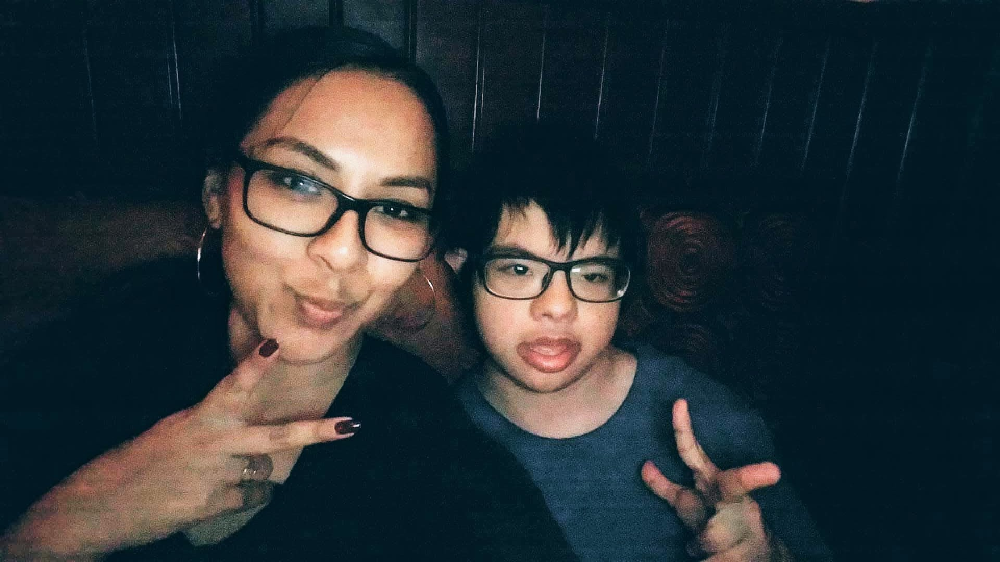

The professional and personal chronicles of a Kathalina.
Raised in a Spanish-English bilingual household, my tongue was the sharpest tool 🔧 I had and I wanted to refine it even more by understanding language as a science. After studying linguistics and everything in between, I was a special education teacher assistant and found significant value in shadowing speech-language pathologists. Drawing upon their techniques enhanced my experience as a language teacher 👩🏻🏫 and knowledge of language nuances.
In Barcelona *spanish accent* 🍷💃🏻, I took my linguistics studies further in a master's program as well as took on positions regarding natural language processing and artificial intelligence. Once I heard the term conversation design, I perked up and wanted in. Along that journey, I picked up foundational concepts of web development which made this very pretty site. Btw, how'd I do? 😋
TL;DR I'm an educator, linguist, conversation designer, and web developer 🤹🏻♀️🦸♀️
Collect moments, not things. — From the perspective of a special educator and linguist, a simple "hello" 👋🏼 can be a struggle but is also the jumpstart to a meaningful connection. Given my background, I've grown eager to transform data 💾 in all its forms into something with personality for connections and experiences with purpose.
Keep it simple, stupid. — There's sophistication in simplicity 🧘🏻♂️ and makes for a great, seamless end-user experience.
Oh my goodness, you would not believe the number of gigs I've had over years, sometimes at the same time. My immigrant father passed down his work ethic to me; needless to say, I have the the work ethic of a middle-aged working class Mexican man.
My résuméIn my off time, I take on home renovation projects in my family's 200-year-old colonial 🏡 in New Jersey. There's something about working with my hands that makes me kiss my own biceps! Other than that, I do my best to practice minimalism and experience through my travels. 🤸🏻♀️🌍